00全景与读法
这是一份可直接执行的设计，不是一份实验报告。它把 D12 的 SWE agentic RL 配方压到单节点 8× 910B、7B 量级的最小可运行规模，目标不是刷 SWE-bench 榜单，而是把昇腾特有的四个瓶颈量化出来并给出缓解：无 sleep-mode 的显存争用、train/infer 的 logprob 一致性、长 rollout 的显存与上下文、沙箱容器的并行成本。全篇所有数字均为目标值或定性预期，标注为 provisional，真实数字以 M2/M3 实测回填。
每一节固定三段：CUDA 世界的默认做法（左栏，灰：成熟 GPU RL 栈的既有路径）/ 昇腾上的现状（右栏，橙：本方案在 910B 上的选型与已知约束）/ 差在哪（下方色块：差异、原文是否给了理由、对 RL-on-NPU 的含义）。来源分三类：第三方 独立测量或多方一致、自报 官方或作者口径、推断 本站分析。本篇为方案设计（proposal），非已验证结果；具体超参与吞吐需实跑确定。
贯穿全文的一条线索：SWE agentic 让"长度"这一维度同时作用于吞吐、显存、数值三条主线。轨迹越长，尾部越主导 step 时间、KV 越挤占训练预算、logprob 误差越沿序列累积——三条主线在同一个负载上耦合，这正是把它选作压测负载的理由。
01目标与非目标
目标：在单节点 8× 910B 上，用 GRPO 把一个 7B 编码模型在 SWE 任务上从基线训出可测量的提升；把昇腾特有的瓶颈量化出来并给出缓解；产出一张 GPU vs NPU 的吞吐 / 显存 / 一致性对照表。非目标：刷 SWE-bench 榜单、上 32B/MoE、多节点超大规模——这些是原型完成后的扩展。选择该负载的原因：SWE rollout 长且重（30–50 轮、分钟级容器），是昇腾显存与异步痛点的放大器，最能暴露问题、也最能体现前面各期方法的价值。
CUDA 世界的默认做法
原型阶段以"跑出一个能上榜的分数"为目标：选最容易出分的任务与最大可负担的模型，系统指标（显存峰值、一致性、沙箱吞吐）等出问题再补测。
昇腾上的现状
推断 本方案把目标函数换成"把瓶颈量化出来"：7B、单节点、可完整运行为硬约束；产出物是 GPU vs NPU 的系统对照表，而非榜单名次。刷榜、32B/MoE、多节点被显式列为非目标。
差在哪差异在于原型阶段的产出物定义。原文给的理由是路径依赖：昇腾侧的四个坑若不先量化，规模一上去就无法归因。本站判断：这一取舍决定了后文所有的验收口径——每个里程碑的验收都是系统指标而非分数，这在国产栈的首个 agentic RL 闭环上是正确的次序。
02SWE agentic RL 是压测昇腾最严苛负载的原因
若仅需为 910B 选择一个能快速产出结果的 RL 任务，数学题（GSM8K 风格）或短对话偏好成本更低：单轮、定长、奖励即时。本方案选择 SWE agentic，因为它同时暴露昇腾在 RL 训练里最薄弱的几个环节，是一种刻意的压测。机理上有三层放大：
CUDA 世界的默认做法
先用数学或短对话任务把 RL 管线跑通（单轮、定长、奖励即时），agentic 长程负载留到管线稳定之后；长度带来的问题由成熟栈的既有机制（sleep-mode、成熟 loss mask、确定性核）吸收。
昇腾上的现状
推断 刻意选最严苛的负载先跑：SWE agentic 使"长度"同时作用于吞吐（P99 尾部）、显存（KV 随轮次爬升）、数值（误差沿序列累积）三条主线，而这三条恰是昇腾栈最薄弱的环节。本节及以下均为方案设计层面的预期分析，非实测结论（provisional）。
差在哪差异是"先易后难"与"直取最难"的次序之争。原文给了明确理由：三条主线在同一负载上耦合，用简单负载跑通的管线无法预测长程负载下的表现，等于要验两次。本站判断：代价是原型周期更长、失败模式更多；收益是四个坑的量化结果可直接复用到后续所有 agentic 任务。这一选择与 D23 后来的判断一致——沙箱工程与一致性才是复现难度的主项。
03总体架构：五部件与三方解耦
关键原则：推理（rollout）与训练分到不同 NPU 子集，沙箱容器跑在节点的 CPU 上（测试执行不需要 NPU）。trainer 周期性把新权重 sync 回推理 server；解耦异步下，trainer 拉已完成的轨迹，staleness 有界。

这张图怎么读
看四个框的硬件归属：环境框标注"节点 CPU"，推理池与训练池分别标注"NPU 子集"。这条划分是整个方案的第一原则——测试执行不需要 NPU，把沙箱放在 CPU 上，NPU 的两个子集之间才不必在同一时间片争同一份显存预算。
再看边的类型：实线是每轮都发生的高频交互（动作 bash 命令下发、reward 回传），虚线是低频或旁路的（per-trajectory 拉取、trajectory token + reward 入 trainer、weight sync 回流）。高频实线全部落在"推理池 ↔ 环境"之间，这就是第 08 节坑 4 的图形表述：NPU 与 CPU 沙箱之间的往返次数远多于 NPU 与 trainer 之间的，沙箱吞吐因此可能才是真实瓶颈。

这张图怎么读
把它与图 1 叠起来看：本方案的五部件在这张图上几乎逐一对应——Model Engine 的 Megatron-Core 对应昇腾侧的 MindSpeed-RL，LLM Server 的 vLLM 对应 vLLM-Ascend，AgentLoop 里的 SWEAgent 对应 mini-swe-agent 位置，TransferQueue 对应 per-trajectory 的完成轨迹队列，CheckpointEngine 对应 weight sync。这说明本方案采用的不是自创架构，而是 CUDA 侧已经收敛的三方解耦形态（verl-Ascend 正是原文列出的备选 trainer）。
最值得看的是那两个红色标签的位置：User responsibility 框住的是 AgentLoop（agent 逻辑），ML Infra responsibility 指向 CheckpointEngine（权重同步）。这条责任线解释了移植的成本结构——agent 逻辑与任务定义是用户侧、硬件无关的，需要重做的是红线以下的基础设施侧。顶部四种 trainer 模式中的 "Full async" 与 "One-step-off-policy"，正是第 07 节讨论的解耦异步在成熟栈里的现成形态。
CUDA 世界的默认做法
训练与推理 colocate 在同一批 GPU 上，靠 sleep-mode 在 train 阶段换出推理引擎的权重与 KV；三方解耦（训练 / 推理 / 环境）与中央调度已由 verl 等成熟栈内建，用户只写 agent 逻辑。
昇腾上的现状
推断 无 sleep-mode 可假设，因此把解耦从"性能优化"提升为"第一原则"：rollout 与 train 分到不同 NPU 子集，沙箱跑在节点 CPU；trainer 拉已完成轨迹、staleness 有界；weight sync 优先零拷贝或 host 中转。架构可直接借用（图 2），需自建的是基础设施侧的适配。
差在哪同样是解耦，动机不同：CUDA 侧解耦是为了消除 bubble，昇腾侧解耦首先是为了绕开显存争用（第 08 节坑 1）。原文明确把解耦列为坑 1 的"第一杠杆"。本站判断：架构层可迁移、算子层不可迁移，这一分界在图 2 的责任线上有直观对应；对 NPU 团队而言，现在即可采用的是架构与沙箱工程经验，需要自己补的是红线以下部分。
04环境与奖励：二元奖励 + 预过滤
任务源：首选 R2E-Gym-Subset（程序化生成、无需人写 issue/test、镜像规整），或 SWE-Gym-Lite（真实但小）。规模化阶段再上 SWE-smith（一 repo 一执行环境，适合批量）。沙箱：每个任务一个预构建 Docker 镜像，跑在节点 CPU 上；禁网、固定 seed、超时；维持 warm pool + 复用容器降 cold-start。

这张图怎么读
左表要看的是"Executable?" 这一列，而不是实例数。SWE-Gym Raw 有 66,894 条却不可执行，SWE-Bench train 有 19,008 条同样不可执行——对本方案而言这些条目全部不可用，因为二元 F2P/P2P 奖励的前提是任务能在沙箱里真跑起来。可执行行里 R2E-Gym-Subset 的 4,578 是本方案首选任务源的规模，也解释了为何原型阶段无须更大的池子。
右图对第 04 节的预过滤有一层额外含义：分布高度集中——pandas 与 numpy 两个仓库合计接近一半。这意味着沙箱镜像的复用率高（预构建与 warm pool 的收益更大，对应坑 4），但也意味着任务多样性受限，held-out 评测时需要注意仓库层面的分布偏移。图注中"与 SWE-Bench 无仓库重叠"是抗污染的关键性质，与第 12 节"不应将已被污染的 Verified 作为唯一指标"呼应。
奖励是二元的——F2P（fail-to-pass）与 P2P（pass-to-pass）同时满足给 1.0，否则给 0.0；format/parse 惩罚；超时 = 0。不采用更"丰富"的奖励（部分测试通过比例、编辑距离、LLM 打分），原因有二：其一，稠密奖励在 SWE 上几乎都是可被 hack 的代理指标——"通过测试数占比"会奖励那些注释掉断言、改测试而非改实现的轨迹；LLM-judge 引入第二个待对齐的分布，且在昇腾上需额外维护一个推理服务。二元 F2P/P2P 是任务定义本身，不是代理，hack 它即等价于真正修复 bug。其二，代价是奖励极度稀疏，所以必须靠组采样（8–16）+ GRPO 的组内相对优势来制造梯度信号：一组里哪怕只有 1–2 条过了，组内归一化也能把"相对更好"的方向抽出来。这也是选 GRPO 而非 PPO 的配套理由——稀疏二元奖励下，组内 baseline 比学一个 value head 更稳。

这张图怎么读
图的上半部分是入池前的一次性检查，下半部分是每次 rollout 的常规判定——两者容易混淆，但成本量级完全不同：前者每个任务只跑两次（golden / empty），后者每条轨迹都跑一次。三个菱形判定中的任何一个为"否"都汇入同一个丢弃节点，这个"或"的结构说明预过滤的标准是保守的：宁可丢掉可用任务，也不让不确定任务进池。
下半部分的判定条件写的是"F2P 全过且 P2P 不退化"——两个条件都必须满足才给 1.0。P2P 这一半是防回归的：只修好目标测试却弄坏了原本通过的测试，同样得 0 分。这条约束是二元奖励"不可被 hack"性质的技术来源。
预过滤（关键）：每个候选任务，先用 golden patch 跑一遍（应当 PASS）、再用 empty patch 跑一遍（应当 FAIL），只有干净地呈现 FAIL→PASS、且两次结果确定可复现的任务才入池。脏标签对训练的具体破坏有三种：假阴性（golden 也 FAIL）→ 奖励上限失效——如果一个任务连正确答案都拿不到 1 分（flaky 测试、缺依赖、时间戳/网络相关测试、非确定性顺序），那么 agent 无论多正确，这一组的 reward 期望都偏低甚至恒 0，GRPO 组内归一化会在全 0 组上输出零优势或纯噪声优势，等价于向模型提供无信息甚至误导性的 batch；假阳性（empty 也 PASS）→ 模型学会"什么都不做"——空 patch 就能过时，agent 提交空补丁也能得分，组内优势会奖励最短、最消极的轨迹，这与 reward-hacking 监控直接呼应：长度骤降 + reward 上升正是这种污染的信号；不确定任务（两次跑结果不稳定）→ 优势估计方差爆炸——同一条轨迹两次运行的奖励在 1 与 0 之间翻转，组内 baseline 抖动，advantage 的符号都可能翻转，梯度方向被随机化。稀疏奖励本就信号微弱，再叠加标签噪声，等于在低信噪比上再降信噪比。所以预过滤不是"数据清洗的可选项"，而是让稀疏二元奖励这套方案能成立的前提。
CUDA 世界的默认做法
为缓解稀疏奖励，加入稠密的过程信号：部分测试通过比例、编辑距离、LLM-judge 打分；奖励模型或 judge 作为额外服务常驻，数据清洗视为可选的预处理步骤。
昇腾上的现状
推断 只用二元 F2P/P2P（1.0 / 0.0，format 惩罚，超时 = 0）：它是任务定义本身而非代理，且不必在昇腾上再维护一个 judge 推理服务；稀疏性由组采样 8–16 + GRPO 组内相对优势补偿。golden/empty 双跑预过滤是方案成立的前提，而非可选项。
差在哪差异有两层：奖励形态（稠密代理 vs 任务定义本身）与数据清洗的地位（可选 vs 前提）。原文对两层都给了机理级理由——稠密指标的可 hack 路径、脏标签的三种破坏方式（全 0 组零优势、空补丁得分、advantage 符号翻转）。本站判断：在昇腾上"少一个待对齐的分布"本身就是一项系统收益：judge 服务同样面临训推一致与显存争用问题。二元奖励 + 预过滤这一组合与硬件无关，是本方案中迁移成本为零的部分。
05Rollout：scaffold、推理引擎与 observation masking
scaffold：从 mini-swe-agent（bash-only、约 100 行）起步，封装成 (task, policy endpoint) → (token 级 trajectory, reward)，走 OpenAI 兼容 API；成熟后可换 SWE-agent / R2E AgentHub。推理引擎：默认 vLLM-Ascend（910B 覆盖最广、最成熟）；备选 SGLang-Ascend——它的 RadixAttention 能复用"一个任务采 N 条样本共享的 prompt 前缀"（见 D10），对 group rollout 省 KV，但 Ascend 后端成熟度需先验证。
observation-token masking（必做）：agent 的轨迹里，工具输出（bash 的 stdout/stderr、文件内容、测试日志）这些 token 是环境给的、不是模型生成的，它们必须进入 context 参与 attention（模型需要看见日志才能决策），但绝不能进入 loss——否则模型会去"拟合"它根本不负责生成的环境文本。实现上就是一个 per-token 的 0/1 loss mask，把 observation 段置 0。
CUDA 世界的默认做法
loss mask 是成熟路径：主流 GPU 训练栈里 observation masking 已被框架内建并经大量训练验证，通常不作为单独的验收项；scaffold 与推理引擎的选择以吞吐为主要标准。
昇腾上的现状
推断 mask 要穿过在 NPU 上被重写的融合算子（融合 cross-entropy、序列并行切分、packing 的 cu_seqlens 边界），且 agentic 轨迹的 mask 是高频翻转的细碎段，边界 off-by-one 不会报错、只会静默漂移。因此必须把"参与 loss 的 token 数 == 期望值"做成 M0/M1 的 CI 级断言。推理引擎默认 vLLM-Ascend；SGLang-Ascend 的 RadixAttention 可省 group rollout 的 KV，但后端成熟度需先验证。
差在哪差异不在算法而在实现路径的可信度：同一个 0/1 mask，在成熟栈上是既定事实，在重写过算子的栈上是待验证假设。原文给出了两类失效的可观测表现（loss 降但能力不涨 / 几乎没有学习），并把验收方式具体化为断言而非曲线观察。本站判断：这是本篇最容易被低估的一条——它的成本极低（一个小样本断言），而失效代价是整轮训练无效且难以归因。SGLang-Ascend 的取舍则是典型的"新收益 vs 新风险"：省 KV 的同时引入一个成熟度未验证的后端。
06Trainer 与算法选型
框架：MindSpeed-RL（华为原生、Megatron 系、跑过 384-NPU 上的 GRPO，本看板 Ascend 标签有卡）为主；verl-Ascend 为备选。算法：GRPO++（clip-higher、无 KL、无 entropy bonus、长度归一化、组采样 8–16/任务）——对稀疏二元奖励最稳，无 value network。引擎切分：训练引擎（MindSpeed/Megatron 算梯度）与推理引擎（vLLM-Ascend 出 rollout）分离，周期性 weight sync（优先零拷贝 / host 中转）。冷启动：先用 SWE-smith-trajectories 几千条专家轨迹做 SFT，再进 GRPO。
CUDA 世界的默认做法
PPO 系配 value network，或 GRPO 配完整正则项（KL 惩罚贴住参考策略、entropy bonus 维持探索）；框架选择余地大（verl、TRL、OpenRLHF 等），weight sync 有成熟的 NCCL 直传实现。
昇腾上的现状
自报 MindSpeed-RL 已跑过 384-NPU 上的 GRPO。推断 算法直接采用 D22 记录的 GRPO++（clip-higher、无 KL、无 entropy bonus、长度归一化、组采样 8–16），无 value network——稀疏二元奖励下组内 baseline 比学一个 value head 更稳，且省下 reference model 与 critic 的显存；weight sync 优先零拷贝或 host 中转；冷启动用 SWE-smith-trajectories 几千条做 SFT。
差在哪差异是"显存预算约束下的算法选型"：去掉 value network 与 reference model 不只是算法偏好，在没有 sleep-mode 的 64GB 单卡上，它直接决定方案是否装得下。原文给了算法层理由（稀疏二元奖励下组内 baseline 更稳），显存层理由则由第 08 节坑 1 补足。本站判断：GRPO++ 在这里承担了双重角色——D22 验证过的长程稳定性配方，同时也是昇腾显存约束下的可行解；两个理由指向同一选择，这是本方案中风险最低的一环。
07异步与信用分配：解耦异步 vs 同步 GRPO
同步 GRPO：每个 step 内，采一组轨迹 → 全部跑完 → 算优势 → 更新。优点是绝对 on-policy，采样策略就是当前策略，无需 off-policy 校正，数值最干净。致命缺点——如第 02 节所述，SWE 轨迹重尾，step 时间被组内最慢轨迹决定，NPU 在 rollout 阶段大量空转。同步是正确但慢的基线。
解耦异步：推理服务与 trainer 解耦，per-trajectory 拉取已完成轨迹（先完成者先入队），trainer 持续消费、持续更新。NPU 不再等尾部，吞吐显著改善。代价是采样轨迹来自稍旧的策略（off-policy），引入两个必须管的东西：staleness 有界——必须限制"用来更新的轨迹最多落后当前权重几个版本 / 几个 step"，无界 staleness 会让训练用上几代以前的策略数据，优势估计与当前策略脱节，训练发散，有界即以少量 off-policy 偏差换取大量吞吐的调节手段；TIS/MIS——轨迹既然 off-policy，就要用重要性采样校正，而 IS 比值方差大、长尾，直接使用会导致梯度爆炸，所以做 truncated / masked IS，对比值截断、对异常 token 屏蔽，抑制方差。它与坑 2 的 align-probe 属同一体系：align-probe 告诉你 train/infer 差多大，TIS/MIS 是据此做的实际防护。信用分配：默认"结果奖励 + 长度归一化广播 + GRPO 组采样"；太稀疏时采用 turn-level / GiGPO（把每轮当 MDP step）。

这张图怎么读
主环路只有一个方向的循环：server → 完成队列 → trainer → weight sync → server。要注意的是队列的存在本身就是 off-policy 的来源——轨迹在队列里等待期间，权重已经更新过，因此"staleness 有界"这一标注挂在拉取那条边上，而不是队列上。
真正的读图重点在下方旁路：align-probe 不在主环路上，它从完成队列采样（虚线），测完 MAE 后通过一个菱形判定把主环路分成两条路径——超阈值走"trainer 重算或 TIS/MIS 修正"，未超阈值直接用 infer logprob。这个结构说明 align-probe 是一个持续运行的门控，而非一次性检查：它的输出改变主环路的行为。第 09 节要讨论的阈值，正是这个菱形里的数字。
方案路线：M2 先以同步验证正确性（确认配方本身有效），再切换解耦异步获取吞吐——这样一旦异步出问题，有同步基线做对照，能区分"是异步引入的 bug"还是"配方本身不对"。这是把昇腾吞吐杠杆（M3）建立在可信基线上的必要顺序。
CUDA 世界的默认做法
异步与 partial rollout 已是成熟栈的默认模式（图 2 顶部的 Full async / One-step-off-policy 即为现成选项），IS 修正由框架内建；同构栈上 train/infer logprob 天然接近，off-policy 校正的数值基础可以假定成立。
昇腾上的现状
推断 异步的收益同样成立（不等尾部），但两项前提需自建：staleness 上界的具体取值待实测，TIS/MIS 的截断阈值需与 FP8 联调；且在异构栈上不能假设 train/infer logprob 接近，必须由 align-probe 旁路持续给出证据。因此路线固定为"先同步建可信基线，再切异步"。
差在哪差异在于异步的数值前提是否可以默认成立。CUDA 侧 off-policy 校正建立在"两条路径数值接近"的隐含假设上，昇腾侧这一假设本身就是待验证项——这也是 align-probe 必须与异步同时上线的原因。本站判断："先同步再异步"的顺序看似保守，实则是归因能力的保证：没有同步基线，异步阶段的任何异常都无法区分是配方问题还是异步引入的 bug。这条纪律与硬件无关，但在昇腾上收益更大，因为可疑源更多。
08昇腾特有的四个坑与缓解（本原型的核心产出）

这张图怎么读
四条连线是一一对应的，但四个坑之间并非独立——这是图上没有画出、却必须补上的关系：坑 1 的缓解手段"FP8 量化 rollout"会直接抬高坑 2 的 logprob MAE；坑 3 的"限轮"同时压住坑 1 的 KV 增长；坑 4 的沙箱尾延迟决定 NPU 空转比例，从而影响坑 1 的时间片划分是否值得。读这张图时，应把它看作四个耦合变量的一览，而不是四个可独立处理的工单。
另一个值得注意的细节：四条缓解里有三条是限制类（限轮、限 tokens、staleness 有界、截断），只有 warm pool 与预构建镜像是增效类。这反映了方案的整体姿态——在硬件能力与栈成熟度未知的前提下，先用约束把系统压进可运行区间，再逐项放宽。
坑 1：无 sleep-mode 的显存争用。机理：成熟 GPU RL 栈有 sleep-mode，能在 train 阶段把推理引擎的权重 / KV 临时换出、把显存让给 trainer，step 间再换回。昇腾侧目前不能假设有这个能力：rollout 引擎在 train 阶段无法干净释放 KV / 权重，于是 64GB 单卡要同时承载 rollout 与 train 两套常驻占用。对策与取舍：解耦（rollout 与 trainer 不在同一时间片争同一份预算）是第一杠杆；host offload 把暂不用的权重 / 优化器状态换到 host 内存（代价是搬运延迟）；限轮（turns/tokens 上限）直接压住 KV 增长上界；FP8 量化 rollout 让推理权重与 KV 用 FP8，显存近似减半（代价是引入 train/infer 数值差，与坑 2 耦合）。定性预期（provisional）：FP8 rollout 预期把 rollout 侧 HBM 峰值压到 BF16 的约 50–60%，是能否在单卡容纳"长轨迹 KV + 训练激活"的关键开关。
坑 2：train/infer logprob 不一致。机理：同一段 token，rollout 用 vLLM-Ascend（推理优化算子、可能 FP8）、trainer 用 Megatron（训练算子、BF16），两套算子在 NPU 上的数值实现不同，逐 token logprob 会有偏差。重要性比 exp(logπ_train − logπ_infer) 对这个差异指数级敏感，长序列上误差累积，会让 off-policy 校正项失真甚至发散。对策：align-probe（第 09 节专述）逐 token 量 MAE；超阈值时让 trainer 重算 logprob（以训练侧为准），并用 TIS/MIS 对比值做截断。定性预期（provisional）：期望逐 token logprob MAE 落在"小但非零"的量级；FP8 rollout 会把 MAE 抬高一档，因此 FP8 与 TIS/MIS 截断阈值需要联调——这是 M3 量化杠杆能否兑现的核心风险点。
坑 3：长 rollout 超出上下文上限。机理：30–50 轮、每轮拼接历史，context 单调上涨，必然有任务触及上下文上限。超限轨迹的处理方式，是有偏与无偏之间的取舍。对策：硬限 turns/tokens；observation masking 已省下大量"不必算 loss"的 token；compaction（对历史 observation 做摘要 / 截断，保留决策必要信息）；关键取舍——截断的轨迹给 reward 0 但不丢弃。直觉上倾向于直接丢弃未完成的轨迹，但丢弃会让梯度有偏：被丢的恰好是"长、难、易超限"的任务，系统性地从训练分布里去除硬样本，模型会偏向短任务，且与 reward-hacking 的"变短"趋势合流。给 0 分保留，模型仍受到"别把轨迹拖到超限"的负向信号，分布不被扭曲。定性预期（provisional）：加 compaction + observation masking 后，期望大部分任务的有效 context 增长曲线被压平，超限率显著下降；但 compaction 摘要质量本身是变量，过度压缩会丢失决策信息、损害 reward。
坑 4：沙箱容器并行 / 成本。机理：常见假设是 RL 瓶颈在算力（NPU），但 SWE agentic 的沙箱成本主导在 CPU / 内存 / 容器编排——启动容器、安装依赖、运行测试套件，这些都在节点 CPU 上，且每条轨迹每轮都要交互。NPU 反而经常处于等待沙箱的状态。对策：预构建镜像（依赖装好，免每次冷装）；warm pool（预热一批容器，摊掉启动延迟）；安全复用（同一容器跨任务复用，但保证文件系统 / 状态干净隔离，防止跨任务状态污染标签）；解耦扩缩（沙箱池与 NPU 训练独立扩缩，沙箱容量不足时增加 CPU 资源而非调整 NPU）。定性预期（provisional）：warm pool + 预构建镜像预期把单轮沙箱交互的尾延迟大幅压低，从而抬高 NPU 的有效利用率；沙箱吞吐应作为与 NPU MFU 并列的一级系统指标监控——它很可能才是真实瓶颈。
CUDA 世界的默认做法
坑 1：sleep-mode 在 step 间换出推理引擎的权重与 KV。坑 2：同构栈上 train/infer 数值路径相近，逐 token logprob 差异可忽略。坑 3：上下文与截断策略按框架默认处理。坑 4：默认瓶颈在算力（GPU），沙箱视为附属设施。
昇腾上的现状
推断 坑 1：不能假设有 sleep-mode，64GB 单卡同时承载两套常驻占用；解耦 + host offload + 限轮 + FP8 rollout（预期把 rollout 侧 HBM 峰值压到 BF16 的约 50–60%）。坑 2：两套算子数值实现不同，重要性比对差异指数级敏感；align-probe + trainer 重算 + TIS/MIS。坑 3：compaction + observation masking + 截断给 0 不丢弃。坑 4：沙箱成本主导在 CPU / 内存 / 编排，预构建镜像 + warm pool + 安全复用 + 解耦扩缩；沙箱吞吐应与 NPU MFU 并列为一级指标。全部为 provisional 定性预期。
差在哪四个坑中，坑 1 与坑 2 是昇腾特有（能力缺位与异构算子），坑 3 与坑 4 是 agentic 负载共有、但在昇腾上后果更重。原文对每个坑都给了机理与对策，但预期值全部为定性，没有实测数据支撑。本站判断：四条缓解之间存在耦合，最需要联调的是"FP8 rollout ↔ MAE 阈值"这一对——它同时决定坑 1 能否解决与坑 2 是否恶化，是 M3 的核心风险点。坑 4 的判断最容易被忽视却可能最有价值：把沙箱吞吐提升为一级指标，与 D23 后来"沙箱工程本身是最大难点"的结论一致。
09align-probe：最该先做的健全性检查，以及阈值的自我修正
为什么排第一：坑 2（logprob 不一致）是静默的、会污染所有后续训练的系统性风险，而且它不会像 OOM 那样直接中断——训练仍在运行，只是 advantage 校正在静默失真。在异构（NPU）栈上，不能假设 train/infer logprob 像同构 GPU 栈那样天然接近。所以在为 GRPO 消耗任何 GPU-hour 之前，先用一个最小探针确认"两条路径算出来的概率到底差多少"，是性价比最高的一次检查。
怎么做：取一批固定 prompt + 固定 response（可直接用 SFT 后的样本），分别走 rollout 引擎（vLLM-Ascend）与 trainer（Megatron）前向，对齐逐 token 的 logprob，统计：逐 token MAE 与 P99；误差是否随序列位置累积（长序列尤其要看尾部）；开 / 关 FP8 两种配置各测一遍（FP8 预期更差）。
原文对这套阈值已有自我限定：它是设计取值、需在 M2 用真实分布回标，但"先有一个可证伪的数字"，相比训练结束后发现 reward 无变化再回溯排查，可节省大量 GPU-hour。
本篇的 align-probe"0.05 nats 绿区"阈值，在 D27（低比特训练调研）中被本看板列为必须修正项：该阈值无文献依据，应改为 token 级 KL / log-ppl gap / top-1 翻转率，且阈值应随策略熵动态调整（依据 AIS，arXiv:2605.13907）。D27 同时把"950DT 上 HiF8 GRPO 复现 + 对齐测量"列为可做题目，其口径即为"用 token 级 KL / top-1 翻转率而非静态 nats 阈值"。
因此本节的三段式阈值应按下述方式引用：方法论（把容忍度挂到 IS 比值的影响上、旁路持续监控、超阈值走 trainer 重算 + TIS/MIS）仍然成立；具体数值（0.05 / 0.1 nats）不成立，需以 token 级 KL 或 top-1 翻转率替换，并随策略熵调整。D23 引用本篇时记录的"约 0.05 nats 绿区"同样属于修正前的口径。
CUDA 世界的默认做法
同构栈上 train/infer 一致性问题由根治层解决：batch-invariant 核、确定性推理、统一 FP8 训推管线；数值对齐派与 IS 修正派各有成熟实现，一致性检查通常不是上线前的必做项。
昇腾上的现状
推断 根治层手段在非 CUDA 栈上整体缺位，因此只能走"监控 + 算法补偿"：align-probe 作为持续运行的旁路门控（逐 token MAE 与 P99、误差是否随序列位置累积、开关 FP8 各测一遍），超阈值走 trainer 重算与 TIS/MIS 截断。原文的静态 nats 阈值经 D27 修正为 token 级 KL / log-ppl gap / top-1 翻转率，且随策略熵动态调整。
差在哪差异是"根治"与"监控加补偿"的分层差异，而不是同一手段的强弱差异。原文给的排序理由很硬：这是唯一一类不会中断训练、却会污染全部后续结果的风险，因此必须前置。本站判断：这一节同时是本篇方法论价值最高与最需要打折的一节——旁路探针的架构位置（图 5）值得直接沿用，具体阈值不可照抄。保留一个可证伪的数字仍优于不设阈值，但按 D27 的修正，可证伪的对象应换成 token 级 KL 或 top-1 翻转率。
10里程碑路径 M0–M3

这张图怎么读
主链是四个顺序里程碑，但真正的信息在每个节点下挂的虚线验收条件上：M0 的验收是"不训练只验环境"，M1 是"冷启动可用"，M2 是"GRPO 完成"，M3 是"昇腾杠杆量化"。注意 M0 明确写着"不训练"——先用托管模型跑通一条完整轨迹并确认 reward 计算正确，把环境侧的正确性与训练侧的正确性分开验证。
M2 的验收条件里并列了三项：reward 上升、轨迹长度稳定、logprob MAE 达标。三项缺一不可，且第二项是防 reward hacking 的（长度骤降 + reward 上升是污染信号，见第 04 节假阳性）。M3 的产出物不是分数而是一张四指标对照表——这与第 01 节的目标定义前后闭合，也正是 Project Ideas 里"GRPO-on-Ascend Benchmark"那条的落地。
CUDA 世界的默认做法
里程碑以能力指标推进：跑通管线后直接进 RL，以 reward 曲线与基准分数作为阶段验收；系统指标在需要优化时再测。
昇腾上的现状
推断 四个里程碑的验收全部是系统性断言：M0 只验环境不训练、M1 只验 loss 与合法 patch、M2 三项并列（reward 升 + 长度稳 + MAE 达标）、M3 产出四指标对照表。能力指标（SWE-bench-Live 切片、R2E held-out）只要求"方向一致、可比"，不追 SOTA。
差在哪差异在于把"环境正确性"与"训练正确性"拆成两个独立里程碑，且每一级都有可断言的验收。原文给的理由是归因：昇腾侧可疑源多，若不分级验证，M2 阶段的任何异常都无法定位。本站判断：M0 的"不训练"是整条路径中最容易被跳过、也最不该跳过的一步——它的成本是一个任务两次跑测，收益是把标签污染这一类问题挡在训练之前。
11效果与结果对比（proposal 预期目标，非实测）
下面三张对照表给出方案设计阶段的预期方向与目标量级，用于设定验收口径，全部为 provisional，真实数字以 M2/M3 实测回填。GPU 列为对照基线（同配方在 GPU 上的参照），NPU 列为本方案目标。
| 指标 | GPU（对照基线） | NPU / 910B（目标） | 说明 |
|---|---|---|---|
| Throughput（轨迹 / 小时） | 基线 100% | 目标 ≳ 60–80% | 解耦异步落地后期望接近；沙箱尾延迟是主要折损源 |
| MFU / 算力利用率 | 基线 | 同档或略低 | 长 rollout 下 NPU 易被沙箱等待拖低，需 warm pool 拉回 |
| 峰值 HBM | 参照 | 目标 ≤ 单卡 64GB，留余量 | 需 FP8 rollout + 限轮才稳进预算 |
| 逐 token logprob MAE | 约 0（同构） | 目标 < 0.05 nats（绿区） | 异构核心风险，align-probe 把关；该阈值经 D27 修正，见第 09 节 |
| 能力（SWE-bench-Live / R2E held-out） | 参照 | 目标：方向一致、可比 | 先求"能学到东西"，非 SOTA |
| 指标 | BF16 rollout | FP8 rollout（目标） | 取舍 |
|---|---|---|---|
| Rollout 侧峰值 HBM | 基线 100% | 目标约 50–60% | 这是能否塞下长轨迹 KV 的关键开关 |
| Rollout 吞吐 | 基线 | 目标持平或略升 | 显存省出来可提并发或更长 context |
| 逐 token logprob MAE | 较低 | 升高一档（预期仍 < 0.1） | 需与 TIS/MIS 截断阈值联调 |
| 训练稳定性 | 较稳 | 目标不退化 | 红区（MAE > 0.1）则放弃 FP8 或先修算子 |
| 指标 | 同步 GRPO（基线） | 解耦异步（目标） | 取舍 |
|---|---|---|---|
| 端到端吞吐 | 基线 100%（受组内最慢轨迹限速） | 目标显著高于基线 | 核心收益，源于不等尾部 |
| NPU rollout 阶段空转 | 高 | 目标明显降低 | per-trajectory 拉取 + 持续消费 |
| On/off-policy | 纯 on-policy，最干净 | 有界 staleness 的 off-policy | 用小偏差换大吞吐 |
| 梯度方差 / 稳定性 | 较稳 | 目标不显著恶化 | 靠 staleness 上界 + TIS/MIS 兜底 |
| 调试难度 | 低（基线） | 较高 | 故先同步建基线，再切异步对照 |
CUDA 世界的默认做法
方案文档给出预期收益的百分比作为卖点，实测数字发布时再补；对照组常常缺位或口径不同。
昇腾上的现状
推断 三张表的全部数字被显式标注为"目标值 / 方向标注"，服务于"M2/M3 验收时拿什么口径去量"；原文明确指出真正有价值的产出不是这些预设数字，而是 M3 用实测把它们替换掉，并附上 GPU 对照表——届时预期与实测之差，本身就是这套昇腾配方最有信息量的结论。
差在哪差异在于预期值的用途：不是宣传口径，而是验收口径。原文对此有明确的读表提醒。本站判断：三张表中信息量最大的是表 2 的最后两行——FP8 的显存收益与 MAE 代价被写在同一张表上，说明设计者已经预见坑 1 与坑 2 的耦合；一旦实测落入红区，方案本身给出了放弃 FP8 的退出条件，而不是把它当作既定收益。
12评测、验收与风险回退
能力：SWE-bench-Live（post-cutoff，抗污染）小切片 + R2E held-out；不应将已被污染的 Verified 作为唯一指标。系统：GPU vs NPU 的 throughput / MFU / 峰值 HBM；logprob 一致性（MAE）；rollout 占总时长比例；沙箱容器吞吐。健康：reward 与平均轨迹长度并行监控（长度骤降 + reward 升 = hacking）。
CUDA 世界的默认做法
以 SWE-bench Verified 作为主指标；信号太弱时的第一反应是换更大的基座或加数据；系统指标与健康指标不并列为验收项。
昇腾上的现状
推断 能力、系统、健康三类指标并列：抗污染的 SWE-bench-Live 切片 + R2E held-out 取代 Verified 单一指标；沙箱容器吞吐与 logprob MAE 进入一级系统指标；reward 与平均轨迹长度并行监控。四条回退路径均指向"先保正确性，再要吞吐"，且信号太弱时先调任务难度分布（pass-rate 0.2–0.8）而非换大模型。
差在哪差异在于验收维度的数量与回退的方向。原文对每条回退都给了明确的先后次序，其共同结构是"退回慢而正确的路径"。本站判断："用 pass-rate 0.2–0.8 的任务子集维持梯度信号"这条最具可操作性——它把稀疏奖励下的信号问题变成数据侧的可调参数，成本远低于换基座，且与 D23 记录的"pass-rate 双侧过滤窗口"是同一手段。
13总表：CUDA 默认做法 vs 昇腾现状
| 环节 | CUDA 世界的默认做法 | 昇腾上的现状 · 差在哪 |
|---|---|---|
| 原型目标 | 以出分为目标，系统指标事后补测 | 以量化四个坑为目标，产出 GPU vs NPU 系统对照表；刷榜与 32B/MoE 列为非目标 |
| 负载选择 | 先用单轮定长任务跑通管线 | 直取 SWE agentic：长度同时压吞吐、显存、数值三条主线，三者耦合故一次验完 |
| 架构 | colocate + sleep-mode；三方解耦由成熟栈内建 | 解耦是第一原则而非优化：rollout 与 train 分属不同 NPU 子集，沙箱在节点 CPU；架构可借用（图 2），需自建的是基础设施侧 |
| 奖励 | 稠密代理信号 + LLM-judge | 二元 F2P/P2P（任务定义本身，不可 hack），稀疏性由组采样 8–16 + 组内相对优势补偿；少一个待对齐的分布 |
| 数据 | 数据清洗为可选预处理 | golden/empty 双跑预过滤是方案成立前提；脏标签三种破坏：全 0 组零优势、空补丁得分、advantage 符号翻转 |
| loss mask | observation masking 是成熟路径 | mask 要穿过 NPU 上重写的融合算子，边界 off-by-one 静默漂移；必须做成 CI 级 token 计数断言 |
| 算法 | PPO + value network，或 GRPO 配全套正则 | GRPO++（clip-higher、无 KL、无 entropy bonus、长度归一化、组采样 8–16），无 value network——算法稳定性与显存预算指向同一选择 |
| 异步 | Full async / one-step-off-policy 为框架现成选项 | 收益相同，但数值前提待验：staleness 上界与 TIS/MIS 阈值需实测；路线固定为先同步建基线再切异步 |
| 显存 | sleep-mode 在 step 间换出推理引擎 | 不能假设有 sleep-mode；解耦 + host offload + 限轮 + FP8 rollout（预期 HBM 降至 BF16 的约 50–60%，与一致性耦合） |
| 训推一致 | 根治层：batch-invariant 核、确定性推理、统一 FP8 | 根治层整体缺位，只能监控 + 补偿：align-probe 旁路门控 + trainer 重算 + TIS/MIS；静态 nats 阈值经 D27 修正为 token 级 KL / top-1 翻转率 |
| 长轨迹 | 按框架默认处理截断 | 限 turns/tokens + compaction + 截断给 0 但不丢弃（丢弃会系统性去除硬样本，使梯度有偏） |
| 沙箱 | 默认瓶颈在算力，沙箱为附属设施 | 沙箱成本主导在 CPU / 内存 / 编排，NPU 常在等待；预构建镜像 + warm pool + 安全复用 + 解耦扩缩；沙箱吞吐升为一级指标 |
| 验收 | reward 曲线与基准分数 | 四级里程碑各有系统性断言；M2 三项并列（reward 升 + 长度稳 + MAE 达标）；M3 产四指标对照表 |
14原文没给的东西与未能核实的东西
以下是复现时必须自行确定、原文未给数值、或已被后续修正的条目：
- 本篇整体为方案设计（proposal），非已验证结果：所有百分比、阈值与定性预期均为目标值，真实数字以 M2/M3 实测回填；
- align-probe 的 0.05 / 0.1 nats 阈值无文献依据：经 D27 修正，应改为 token 级 KL / log-ppl gap / top-1 翻转率，且随策略熵动态调整（依据 AIS，arXiv:2605.13907）；本篇表 1、表 2 中的 nats 口径同样适用该修正；
- staleness 上界的具体取值：原文只说"有界"，未给版本数或 step 数；
- TIS/MIS 的截断阈值与聚合方式：原文只说需与 FP8 联调，未给数值；
- turns / tokens 硬上限、compaction 的摘要策略与压缩比：全部未给，且原文指出 compaction 摘要质量本身是变量，过度压缩会损害 reward；
- 组采样取 8 还是 16、7B 具体模型：仅给出范围与"Qwen2.5-Coder-7B 一类"的示例；
- warm pool 规模、容器复用的隔离方案：只给出原则（文件系统 / 状态干净隔离），未给实现；
- FP8 rollout 把 HBM 压到约 50–60%、吞吐"持平或略升"：定性预期（provisional），无实测；
- NPU 吞吐达 GPU 的 60–80%、MFU"同档或略低"：目标值，非实测；GPU 对照基线的具体机型与配置未给；
- MindSpeed-RL 跑过 384-NPU 上的 GRPO：自报 口径，未经本看板独立复现；SGLang-Ascend 的后端成熟度原文明确标注为"需先验证"；
- 昇腾无 sleep-mode 这一前提：原文表述为"目前不能假设有这个能力"，属保守假设而非已确认的能力缺失；
- 本文原图受限于网络代理可达性：MindSpeed-RL 与 vLLM-Ascend 的仓库 README 无可用架构图，两张原图分别取自 verl 官方仓库（备选 trainer 的架构参照）与 R2E-Gym 官方仓库（任务源统计），均非本方案自身的实测图。
一、可迁移的是架构，不可迁移的是算子。三方解耦（训练 / 推理 / 环境）、二元 F2P/P2P 奖励、golden/empty 预过滤、GRPO++ 配方、warm pool 与镜像预构建——这些在 CUDA 与昇腾上是同一套，迁移成本为零。需要自建的是融合算子里的 mask 传播、logprob 数值路径、显存换出机制，即图 2 中责任线以下的部分。
二、静默失效比崩溃更贵，验收要写成断言。observation mask 边界错误与 train/infer logprob 漂移都不会中断训练，只会让整轮训练无效且难以归因。对策是把它们变成可断言的检查：参与 loss 的 token 数 == 期望值、align-probe 旁路持续给出一致性证据——两项成本都远低于一轮失败的训练。
三、阈值可以是设计取值，但必须可证伪且允许被推翻。本篇的 0.05 nats 绿区在提出时即标注为设计取值、需回标，随后被 D27 以"无文献依据"修正为 token 级 KL / top-1 翻转率并要求随策略熵调整。方法论（把容忍度挂到对 IS 比值的影响上、旁路持续监控、超阈值走重算与截断）经受住了修正，数值没有——引用时应区分这两层。
M0 与 M1 的实际验收结果——环境侧 reward 计算与沙箱稳定性是整条路径的地基 · align-probe 的首批实测分布（按 D27 修正后的 token 级 KL / top-1 翻转率口径，而非 nats），以及开 / 关 FP8 两种配置的差距 · FP8 rollout 的 HBM 实测收益是否落在预期的 50–60% 区间，以及是否把一致性推入红区 · 沙箱吞吐与 NPU 空转比例的实测值，验证"沙箱才是真实瓶颈"这一判断 · 解耦异步相对同步基线的吞吐倍数，以及 staleness 上界的可用取值范围。